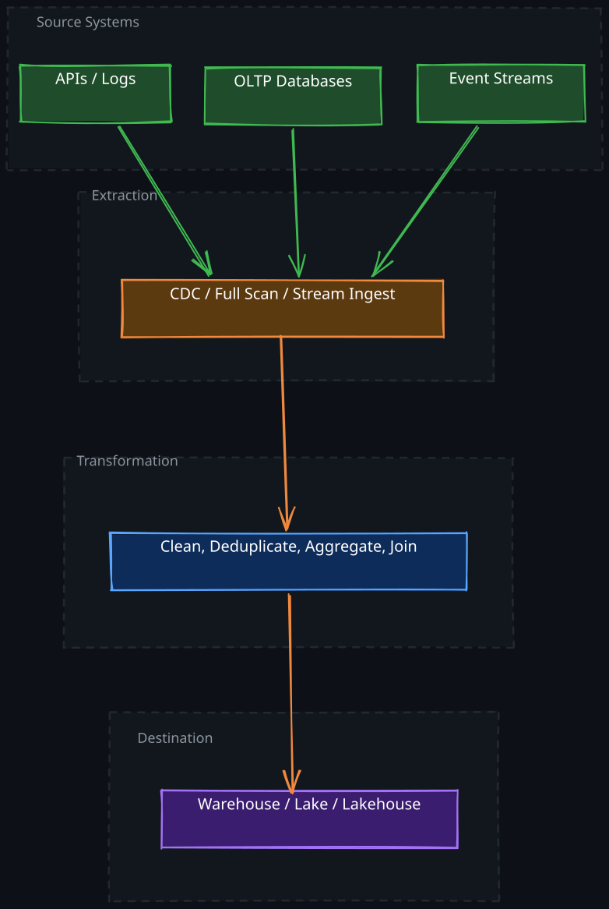
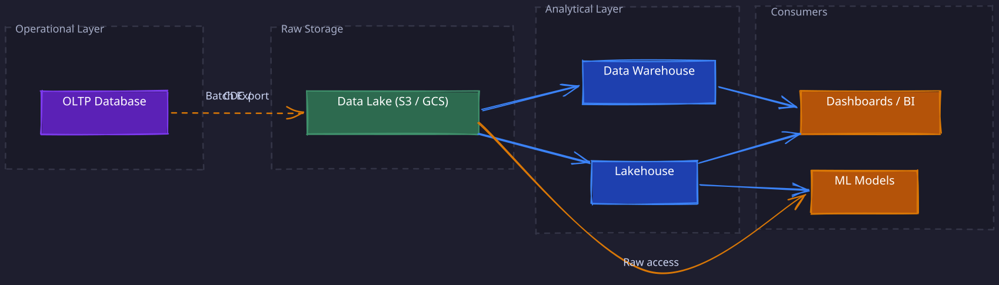
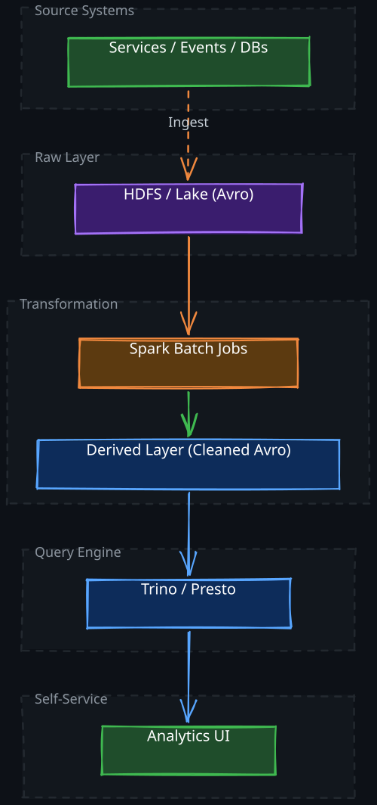

The Story
By 2012, Facebook’s data pipeline was ingesting 600TB per day into their Hive warehouse. A single corrupt upstream event could cascade into hours of reprocessing across the entire pipeline. They learned the hard way that freshness and correctness are adversaries: rushing data into the warehouse meant analysts made decisions on incomplete or duplicated data, while waiting for perfect data meant dashboards were stale by the time anyone looked at them. Facebook’s engineering team built an entire subsystem for “data quality SLAs” — essentially circuit breakers for data pipelines that would halt ingestion rather than propagate garbage. Sometimes stale-but-correct beats fresh-but-wrong.
1. The Core Problem
Every production system generates data across many independent services — user events, transaction logs, application metrics, database changes. This data is valuable, but only if it can be collected, cleaned, and made queryable in a place where analysts, ML models, and dashboards can actually use it. A data pipeline is the system that moves data from where it is produced to where it is consumed, transforming it along the way.
The fundamental tension in pipeline design is between freshness and correctness. You want data available for queries as quickly as possible, but you also need it to be complete, deduplicated, and consistent. Every design decision in a data pipeline is a tradeoff between these two forces.
2. Pipeline Architecture
A data pipeline has three logical stages: extraction from source systems, transformation into a useful shape, and loading into a destination optimized for queries. This is the classic ETL pattern. A variant called ELT loads raw data first and transforms it inside the destination — more on this distinction later.

The CI/CD analogy is useful for a quick mental model: just as a build pipeline takes source code through compilation, testing, and deployment, a data pipeline takes raw data through extraction, transformation, and loading. But the similarities end quickly — data pipelines face challenges that build systems do not: schema drift, late-arriving data, exactly-once semantics across distributed systems, and the need to reprocess months of historical data when business logic changes.
3. Extraction: Getting Data Out of Source Systems
Extraction is deceptively hard. The source system is optimized for serving application traffic, not for bulk data export. Every extraction strategy must balance three concerns: impact on the source, data completeness, and latency.
1. Full Extraction vs Incremental Extraction
The simplest approach is a full extraction — dump the entire table periodically. This is correct by construction (you always get all the data) but expensive. For a 500 GB table, a nightly full dump saturates disk I/O and network bandwidth for hours.
Incremental extraction only captures rows that changed since the last extraction. This is dramatically cheaper but introduces complexity: you need a reliable way to identify what changed. Common approaches:
- Timestamp-based: Query rows where
updated_at > last_extraction_time. Simple but fragile — clocks skew, and deletes are invisible unless soft-deleted. - Sequence-based: Use an auto-incrementing ID or sequence number. Works for append-only tables but misses updates to existing rows.
Both approaches can miss changes during clock drift or transaction boundaries, which is why the industry has largely converged on CDC.
2. Change Data Capture
Change Data Capture (CDC) reads the database’s write-ahead log (WAL) or binlog to capture every insert, update, and delete as it happens. This is the gold standard for extraction because:
- Zero impact on the source — it reads the replication stream, not the application tables
- Complete — every committed change is captured, including deletes
- Low latency — changes are available within seconds
- Preserves ordering — events arrive in commit order
Tools like Debezium (for 01-Kafka-based pipelines) connect to MySQL binlog or PostgreSQL WAL and emit change events to a stream. The tradeoff is operational complexity — you need to manage connector state, handle schema changes in the source, and deal with binlog retention limits.
3. Stream Ingestion
For event data (clickstreams, application logs, IoT telemetry), there is no database to extract from. Events are published directly to a streaming platform like 01-Kafka. The extraction challenge here shifts to backpressure management (what happens when producers emit faster than consumers can process) and ordering guarantees (events for the same entity should be processed in order).
4. Transformation: Design Principles
The transformation layer is where raw data becomes useful. But the real engineering challenge is not the transformations themselves — it is building a transformation layer that is correct under failure, evolvable as requirements change, and reproducible for debugging.
1. Idempotency
A transformation is idempotent if running it twice on the same input produces the same output. This property is non-negotiable in production pipelines because failures are inevitable. If a Spark job crashes halfway through, you need to re-run it without producing duplicate records.
The standard technique is overwrite semantics at the partition level: each job run writes to a specific output partition (e.g., date=2026-03-28), and a re-run overwrites that entire partition. This makes the operation idempotent — the second run produces the same partition contents as the first. The alternative, appending records, requires deduplication logic downstream and is far more error-prone.
2. Exactly-Once Semantics
In a streaming pipeline, exactly-once processing means each input event contributes to the output exactly once, even if the system retries due to failures. This is harder than it sounds because the pipeline must coordinate between reading an input, producing an output, and committing the offset — all of which can fail independently.
The typical solution is transactional writes: the output and the offset commit happen atomically. 01-Kafka Streams and Apache Flink both support this pattern. Without it, you get either at-least-once (duplicates) or at-most-once (data loss) semantics.
3. Schema Evolution
Source systems change their schemas constantly — columns are added, renamed, or removed. A robust pipeline must handle these changes without manual intervention for common cases.
The key insight is to use a schema-on-read approach combined with a schema registry. Raw data is stored in a self-describing format (Avro, Parquet) that embeds its schema. The schema registry tracks compatibility rules: a new schema version must be backward-compatible (readers using the old schema can still read new data) or forward-compatible (readers using the new schema can read old data). This allows producers and consumers to evolve independently.
When schema changes are breaking (e.g., a column type change from string to integer), the pipeline must detect this and either fail loudly or route the incompatible data to a dead-letter queue for manual resolution.
4. Backfill Strategies
When transformation logic changes, you often need to reprocess historical data. A well-designed pipeline treats backfills as a first-class operation, not an emergency procedure.
The key design decision is partition-based reprocessing: historical data is organized into time-based partitions (daily or hourly), and a backfill re-runs the transformation for a specified range of partitions. Each partition is independently idempotent, so you can backfill a single day or an entire year using the same code path.
The challenge is resource contention: a backfill over six months of data competes with the daily incremental pipeline for cluster resources. Production pipelines typically run backfills at lower priority or on a separate cluster to avoid impacting the freshness of today’s data.
5. ETL vs ELT
The traditional ETL approach transforms data before loading it into the destination. This made sense when warehouse storage was expensive and compute was the bottleneck — you wanted to load only clean, aggregated data.
ELT inverts this: load raw data into the destination first, then transform it using the destination’s own compute engine. Modern cloud warehouses (BigQuery, 08-Snowflake, Databricks) make this practical because:
- Storage is cheap — you can afford to keep raw data
- The warehouse’s query engine is powerful enough to run complex transformations as SQL
- Analysts can iterate on transformation logic without waiting for a separate pipeline team to redeploy
The tradeoff is that your warehouse becomes both storage and compute, which can lead to cost surprises if transformations are expensive. ETL still makes sense when you need to filter out sensitive data before it reaches the warehouse, or when transformation logic is too complex for SQL.
6. Batch vs Stream Processing
Every pipeline must choose between processing data in batches (accumulated over a time window) or as a continuous stream. This is not a binary choice — most production architectures use both.
| Dimension | Batch | Stream |
|---|---|---|
| Latency | Minutes to hours | Seconds to low minutes |
| Completeness | High — processes all data in the window | Lower — late-arriving data may be missed |
| Complexity | Lower — simpler failure recovery, easier debugging | Higher — must handle out-of-order events, watermarks, state management |
| Cost | Lower — runs periodically, cluster can be shared | Higher — always-on infrastructure |
| Correctness | Easier — reprocessing is straightforward | Harder — exactly-once semantics require careful coordination |
Batch processing (e.g., a nightly 04-Spark job) is the workhorse for most analytical workloads. It processes all data that arrived in a given time window, which guarantees completeness. If the job fails, you re-run it — idempotent partition writes make this safe. The downside is latency: your dashboard shows yesterday’s data, not today’s.
Stream processing (e.g., Flink, Kafka Streams) processes each event as it arrives. This gives you real-time dashboards and alerts, but introduces fundamental complexity. Late-arriving events require watermark logic — you define how long to wait for stragglers before closing a window and emitting results. If data arrives after the watermark, it either triggers a correction or is dropped.
The Lambda and Kappa Architectures
The Lambda architecture runs both a batch layer (for correctness) and a speed layer (for freshness) in parallel, merging their results at query time. This gives you both complete historical data and real-time updates, but at the cost of maintaining two separate codebases that must produce consistent results.
The Kappa architecture eliminates the batch layer entirely, using only a stream processor that can also reprocess historical data by replaying the event log. This simplifies operations but requires that your streaming framework can handle reprocessing at batch scale — not all can.
In practice, most teams start with batch and add streaming only for use cases that genuinely need sub-minute latency. Running a full streaming pipeline is operationally expensive, and batch is correct by default.
7. Warehouse Schema Design
Once data reaches the warehouse, it needs to be organized for efficient querying. The two dominant patterns are the star schema and the snowflake schema, and the choice between them reflects a fundamental tradeoff between query speed and storage efficiency.
1. Star Schema
A star schema has a central fact table containing the measurable events (sales, clicks, transactions) surrounded by dimension tables that describe the context (customer, product, time, location).
The key design decision is denormalization of dimensions. In a star schema, each dimension table is a flat, wide table — the customer dimension contains the customer’s name, city, state, country, and region all in one row. This means data is redundant (the string “California” is stored millions of times), but queries are fast because no joins are needed to traverse a dimension hierarchy.
Why does this work? Analytical queries almost always filter or group by dimension attributes (WHERE country = 'US' GROUP BY product_category). Pre-joining dimensions into flat tables means the query engine touches fewer tables and performs fewer joins. In columnar storage, the repeated strings compress extremely well, so the storage overhead is minimal.
2. Snowflake Schema
A snowflake schema normalizes the dimension tables. Instead of a single flat customer dimension, you have separate Customer, City, State, and Country tables linked by foreign keys.
This reduces redundancy, which matters when dimensions change frequently (slowly changing dimensions). If a city’s region classification changes, you update one row in the City table instead of millions of rows in a denormalized customer dimension.
The tradeoff is query performance: every query that needs the country name must join through Customer -> City -> State -> Country. Modern query engines with cost-based optimizers can handle this, but the joins add latency compared to the pre-joined star schema.
3. When to Choose Which
Use a star schema when query performance is the priority and dimensions are relatively stable. This covers most BI dashboard workloads. Use a snowflake schema when dimensions change frequently and storage cost matters, or when a single dimension has deep hierarchies (e.g., a product taxonomy with 6 levels).
8. Storage Architecture: Database vs Warehouse vs Lake vs Lakehouse
These four systems serve different purposes in the data lifecycle, and understanding how data flows between them is more important than memorizing definitions.

1. OLTP Database (PostgreSQL, MySQL, DynamoDB) — optimized for low-latency transactional reads and writes. Row-oriented storage, heavy indexing, designed for operational workloads. Not suitable for analytical queries that scan millions of rows.
2. Data Lake (S3, GCS, ADLS) — cheap, durable object storage that holds raw data in open formats (Parquet, Avro, ORC). A lake stores everything — structured, semi-structured, unstructured — without requiring a predefined schema. The limitation is that a raw lake has no query optimization: no indexes, no statistics, no transaction support. Querying raw Parquet files on S3 is slow for interactive analytics.
3. Data Warehouse (BigQuery, Redshift, 08-Snowflake) — optimized for analytical queries. Columnar storage, aggressive compression, cost-based query optimizers, materialized views. The tradeoff is that warehouses require data to be loaded and structured upfront, and storage is more expensive than a lake.
4. Lakehouse — the key insight behind the lakehouse is: what if you could add warehouse-style query optimization on top of lake storage? Systems like Delta Lake, Apache Iceberg, and Apache Hudi add a metadata layer over Parquet files in object storage. This metadata layer provides:
- ACID transactions on object storage (atomic writes, snapshot isolation)
- Schema enforcement and evolution
- Partition pruning and file-level statistics for query optimization
- Time travel (query data as of a previous point in time)
The result is warehouse-level query performance at lake-level storage costs, with the flexibility to support both SQL analytics and ML workloads on the same data. This is why the industry is converging on the lakehouse pattern.
9. Production Pipeline Architecture
A production-grade pipeline at scale follows a layered architecture: source systems -> raw storage -> transformation layers -> query engine -> consumption layer. LinkedIn’s data platform is a concrete example of this pattern.

1. Layer-by-Layer Design
Raw Layer: All data lands first in a raw storage layer in a self-describing format like Avro. This layer is append-only and immutable — you never modify raw data. Keeping raw data intact means you can always reprocess it when transformation logic changes. At LinkedIn, this is Avro files on HDFS; at other companies, it might be Parquet on S3.
Transformation Layer: 04-Spark batch jobs clean, normalize, and aggregate raw data into a derived layer. Each job is idempotent and partition-based. The derived layer stores the “golden” version of each dataset — deduplicated, schema-validated, and ready for queries. This separation between raw and derived data is critical: raw data is your safety net, derived data is your productivity layer.
Query Engine: A distributed SQL engine like 02-Trino or Presto queries the derived layer directly without loading data into a separate system. These engines are optimized for federated queries — they can join data across HDFS, object storage, and even operational databases in a single query. The key advantage is separation of storage and compute: you scale query capacity independently of data volume.
Self-Service Layer: A UI that lets engineers and analysts write SQL against the query engine, visualize results, and build dashboards. This layer abstracts the complexity of the underlying storage and compute infrastructure. At LinkedIn, this is Darwin; in the broader ecosystem, tools like Looker, Superset, or Mode serve the same purpose.
2. Why This Layered Architecture Works
Each layer has a single responsibility and can evolve independently. You can swap the query engine from Presto to Trino without touching the transformation layer. You can migrate raw storage from HDFS to S3 without changing how analysts write queries. And most importantly, you can reprocess any layer from the one below it, which makes the entire system recoverable from logical errors.
10. Pipeline Failure Modes
Understanding how pipelines fail is as important as understanding how they work.
1. Late-arriving data — Events arrive after the batch window has closed. If you aggregated hourly clicks at 1:00 AM but some click events from 12:55 AM arrive at 1:05 AM due to network delays, those events are missing from the aggregate. Solutions include reprocessing recent partitions in a subsequent run or using watermarks in streaming systems to define acceptable lateness.
2. Schema drift — A source system adds a column or changes a type without notifying the pipeline team. Without a schema registry (centralized service to store, manage, and validate schemas), this silently corrupts downstream data. With a registry and compatibility checks, the pipeline detects the change and either handles it gracefully or fails fast.
3. Duplicate processing — A Spark job partially writes output, crashes, and re-runs. Without idempotent writes (partition-level overwrite), the re-run produces duplicate records that inflate metrics. This is one of the most common data quality issues in production.
4. Backpressure cascades — In a streaming pipeline, if the transformation layer slows down (due to a complex join or a GC pause), events queue up in Kafka. If the queue grows beyond the retention period, data is lost. Monitoring consumer lag and setting appropriate retention periods prevents this.
5. Dependency failures — Pipeline B reads the output of Pipeline A. If Pipeline A is delayed or produces incorrect data, Pipeline B propagates the error. Robust pipelines implement data quality checks between stages: validate row counts, check for null rates, compare against expected distributions before downstream jobs consume the data.
Revision Summary
- A data pipeline moves data from source systems through extraction, transformation, and loading into a query-optimized destination. The core tension is freshness vs correctness.
- CDC is the preferred extraction method for databases — it reads the WAL/binlog with zero source impact, captures all changes including deletes, and preserves ordering.
- Transformation design hinges on four principles: idempotency (partition-level overwrite), exactly-once semantics (transactional writes), schema evolution (registry with compatibility rules), and backfill as a first-class operation (partition-based reprocessing).
- Batch processing is simpler, cheaper, and correct by default. Stream processing adds sub-minute latency but introduces complexity around watermarks, state management, and exactly-once guarantees.
- Star schema denormalizes dimensions for fast queries (no joins, columnar compression handles redundancy). Snowflake schema normalizes for slowly changing dimensions at the cost of join overhead.
- The lakehouse insight: add a metadata layer (Delta Lake, Iceberg, Hudi) over cheap object storage to get warehouse-level query optimization at lake-level cost.
- Production architectures follow a layered pattern: raw (immutable) -> derived (transformed) -> query engine -> self-service UI. Each layer is independently evolvable and reprocessable from the layer below.
Deep Understanding Questions
- Your CDC pipeline captures a DELETE event for a row, but the downstream transformation job has already processed an earlier version of that row. How do you ensure the delete is reflected in the derived table? What if the transformation runs in batch mode with daily partitions? Ans:
- A Spark transformation job writes output using append mode instead of overwrite mode. The job fails after writing 60% of records and is retried. What happens to the output data? How would you detect this issue, and what design change prevents it? Ans:
- You are running a streaming pipeline with exactly-once semantics. The Kafka consumer commits offsets to Kafka but writes output to a separate database. What failure scenario breaks exactly-once? How do transactional writes solve this? Ans:
- A source system renames a column from
user_idtomember_id. Your schema registry enforces backward compatibility. Does this change pass compatibility checks? What happens to downstream consumers still expectinguser_id? Ans: - Your warehouse uses a star schema with a denormalized customer dimension. A data correction changes the region classification for 50,000 customers. How many rows need to be updated in the fact table vs the dimension table? How would this differ in a snowflake schema? Ans:
- A backfill job reprocesses 6 months of data on the same Spark cluster that runs daily incremental jobs. What resource contention issues arise? How would you design the system to prevent the backfill from delaying today’s incremental pipeline? Ans:
- In a Lambda architecture, the batch layer and speed layer both compute the same metric (e.g., daily active users). Under what circumstances could they produce different results? How does the system resolve this discrepancy? Ans:
- Your data lake stores raw Parquet files on S3. You add an Apache Iceberg metadata layer to enable lakehouse queries. What specific capabilities does the metadata layer add that raw Parquet files on S3 lack? What is the cost of maintaining this metadata? Ans:
- A streaming pipeline uses watermarks set to 5 minutes. An event arrives 7 minutes late. What happens to this event? What are the tradeoffs of increasing the watermark to 30 minutes? Ans:
- Pipeline B depends on the output of Pipeline A. Pipeline A completes successfully but produces subtly incorrect data (e.g., a join key was wrong, causing 2% of rows to have null values). How would you design inter-pipeline data quality checks to catch this before Pipeline B runs? Ans: